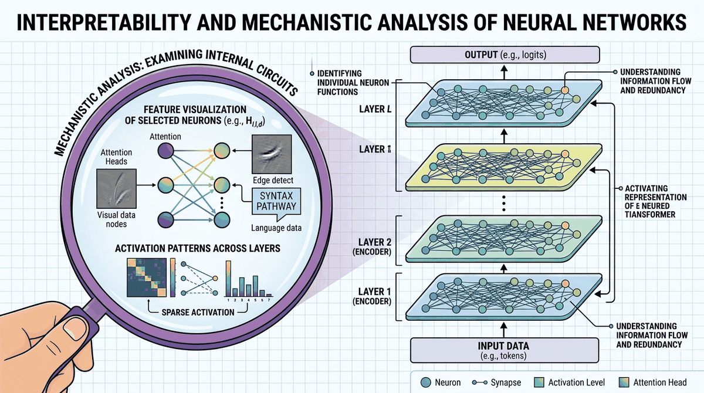

"The question is not whether neural networks have interpretable structure, but whether we have the patience and ingenuity to find it."
Probe, Relentlessly Curious AI Agent

Part II so far has been about LLMs as systems: how they are trained, what families exist, how they reason, how they are served. This chapter turns inward: what is actually happening inside the weights? You will learn how to read attention patterns, run probing classifiers, identify circuits and induction heads, and use sparse autoencoders to find interpretable features. Interpretability sits in Part II because every Part-III-onward chapter implicitly assumes the model behaves predictably, and this chapter is where you learn the tools to verify that.
Chapter Overview
Imagine deploying a medical AI that recommends a treatment, and a doctor asks, "Why this recommendation?" You open the model's attention weights and find it fixated on a patient's zip code, not their symptoms. Without interpretability tools, you would never have caught this failure. As large language models are deployed in high-stakes applications, the question "why did the model produce this output?" becomes critical. Interpretability research aims to open the black box of transformer models, revealing the internal computations that drive predictions, the features that neurons encode, and the circuits that implement specific behaviors.
This chapter covers the full spectrum of interpretability methods for softmax. It begins with attention analysis and probing classifiers, which offer accessible entry points for understanding model internals. It then advances to mechanistic interpretability, the ambitious program of reverse-engineering neural networks at the level of individual features and circuits. The chapter also covers practical interpretability tools for debugging, model editing, and representation engineering, as well as formal attribution methods for explaining transformer predictions.
By the end of this chapter, you will be able to analyze attention patterns to understand model behavior, use probing classifiers to test what information is encoded in hidden states, apply sparse autoencoders to extract interpretable features, and employ attribution methods to explain individual predictions.
As LLMs become more capable, understanding what they have learned and why they produce specific outputs becomes critical. Interpretability tools like probing, attention analysis, and mechanistic interpretability complement the safety and alignment techniques in Chapters 17 and 32, helping you build systems you can trust and debug.
- Visualize and interpret attention patterns, including induction heads, previous-token heads, and positional patterns
- Design and train probing classifiers to test whether specific linguistic or semantic features are encoded in hidden states
- Explain the logit lens and tuned lens techniques for inspecting intermediate representations
- Describe the circuits and features framework for mechanistic interpretability and the role of sparse autoencoders
- Apply activation patching to localize which model components are responsible for specific behaviors
- Use TransformerLens and nnsight for hands-on mechanistic analysis of transformer models
- Apply feature attribution methods (Integrated Gradients, SHAP) to explain individual predictions
- Perform representation engineering and model editing (ROME, MEMIT) to modify specific model knowledge
- Compare attention rollout, gradient-weighted attention, and perturbation-based explanation methods
- Chapter 04: The Transformer Architecture (multi-head attention, feed-forward layers, residual stream)
- Chapter 07: Modern LLM Landscape (model families, next-token prediction, embedding spaces)
- Chapter 05: Embeddings and Representation Learning (vector spaces, similarity)
- Comfortable with PyTorch, including hooks, autograd, and tensor manipulation
- Linear algebra fundamentals (matrix multiplication, eigendecomposition, SVD)
Sections
- 10.1 Attention Analysis & Probing A comprehensive chapter from the Building Conversational AI textbook.
- 10.2 Mechanistic Interpretability A comprehensive chapter from the Building Conversational AI textbook.
- 10.3 Practical Interpretability for Applications A comprehensive chapter from the Building Conversational AI textbook.
- 10.4 Explaining Transformers A comprehensive chapter from the Building Conversational AI textbook.
What's Next?
In the next part, Part III: Working with LLMs, we put your LLM knowledge into practice with APIs, prompt engineering, and hybrid ML systems.